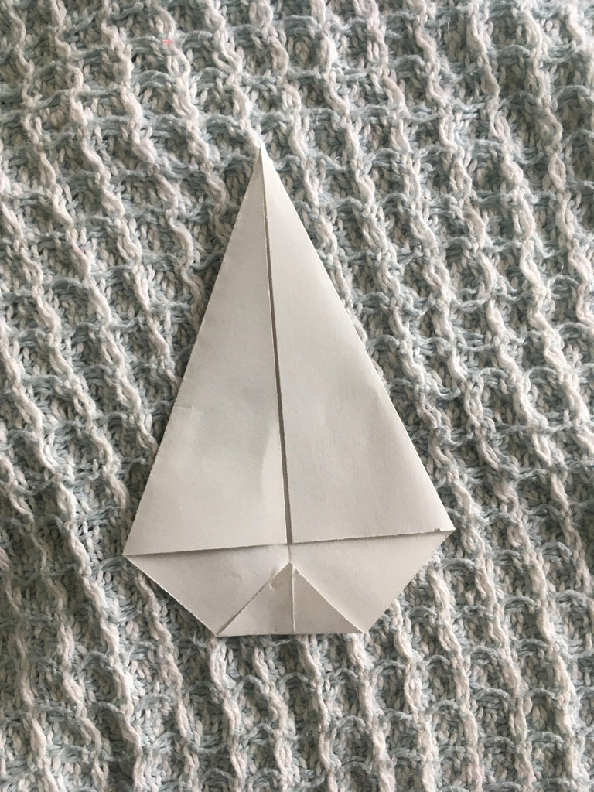

Bring your creativity out in this step! You can use pens, markers, stickers, decorative tape, yarn or anything else to decorate your crown. Enjoy!

Cut 12 4" x 4" squares of paper.
Take one square and fold it in half so that two opposite corners meet each other. Form a crease and then unfold it so it is a square again
Take the square and place it so that the crease is vertical, then take the corners on the left and right side, and the fold them to the crease.
Fold the bottom corner up a tiny bit
Fold the bottom side up again, it should maintain a triangle shape
Fold the bottom side up again, this time it should make a boat-like shape
Repeat steps 2-6 again until you have used all of your squares
If you've done the previous step correctly, then you should be able to slide the pieces together until they fit together
Repeat step 8 again for the rest of the pieces. Some advice if some pieces aren't fitting correctly, try cutting off a little tiny bit from the corners or the bottom. Also if it's falling apart, try using some glue or tape.
For the last pieces, just connect the left end to the right end, the crown might not be perfectly round but that's fine. Check the crown to see if it is a suitable size, if it's too big just remove some pieces, and if it's too small try adding some more pieces. I ended up using 10 pieces since it was a little bit big. If needed, apply some glue or tape for extra support. You can leave your crown here or decorate it in the next step.
Bring your creativity out in this step! You can use pens, markers, stickers, decorative tape, yarn or anything else to decorate your crown. Enjoy!